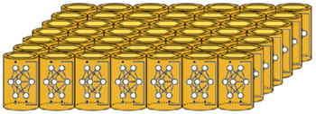
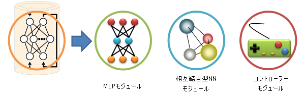

モジュラーネットワーク型自己組織化マップ（mnSOM：modular network SOM）
mnSOMとは
mnSOMはSOMを一般化したモデルとして提案されたモデルで，SOMの応用範囲を更に広げる可能性を秘めています．SOMはベクトルデータの集合を自己組織的に低次元空間へマップする装置でした． したがってユーザーが目的の対象物をSOMで解析したいと思うのなら，事前に解析対象をベクトルとして表現しておかなければなりません．
このような問題を解決し，SOMの応用範囲を一気に広げるのがmnSOMです．

mnSOMは機能モジュールと呼ばれる交換可能なパーツの集合体で,この機能モジュールを交換することで多様なバリエーションを生み出すことができます．
mnSOMのアーキテクチャ

このようなモジュール構造の採用によって，ユーザーは目的に合わせて機能モジュールを選んだりデザインすることが可能になり，ユーザーの自由度を飛躍的に高めることができるようになりました．
目的に合わせてモジュールを変更できる
mnSOMのコンセプト
SOMの構造は参照ベクトルユニットが規則的に配置されたものです．mnSOMはそれらの参照ベクトルユニットをニューラルネットワークなどのモジュールに置き換えたものです．他にもこのモジュールにはコントローラや信号処理フィルタなどを用いることもできます．
SOMとmnSOM
MLPをモジュールとしたmnSOMがつくる”関数”のマップ
例えばSOMのバリエーションには平面SOMや球面SOM，成長型SOMなど多くのものがありますが，これはそのままmnSOMにも取り入れることが可能です．
また厳密にいえば，mnSOMはSOMのバリエーションと捉えるよりもむしろ，SOMを一般化したものとして考えることができます． mnSOMのモジュールとしてヘブ学習をおこなうユニットを選べば，そのmnSOMはそのまま従来のSOMと同じものと考えることができるからです．
つまりSOMの方がmnSOMのバリエーションの1つであり，mnSOMは従来のSOMをも包含する広い概念として捉えることができます．
mnSOMの応用事例
- ・ MLP-mnSOMによる気象マップの獲得
- ・ 適応制御への応用
- ・ SOM自身をモジュールとするmnSOM（SOM2）